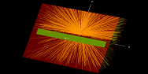

Snake game
This is a classic snake game that I created using html, css and JavaScript. The snake game was popoluar in mobile phones before there were smartphones. Play the game here. The snake is the green box and the food is red box. Use the up arrow to move up, the down arrow to move down, the left arrow to move left and the right arrow to move right. This is a browser application. The code can be found here.

Monte-Carlo simulation
This project is a Monte-Carlo simulation of a 6 MeV photon beam irradiated on a 50 cm X 50 cm X 41.5 cm water region (crude simulation of a water phantom) containing a small air-filled region (crude simulation of an air-filled radiation detector). The simulation calculate the dose deposited in the water region and the air-filled region. The code of the simulation can be found here. A video showing me creating the project can be found here.